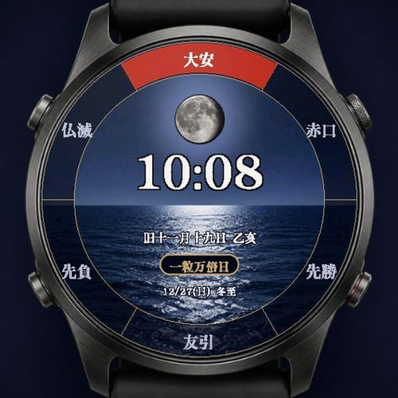
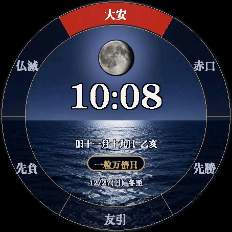
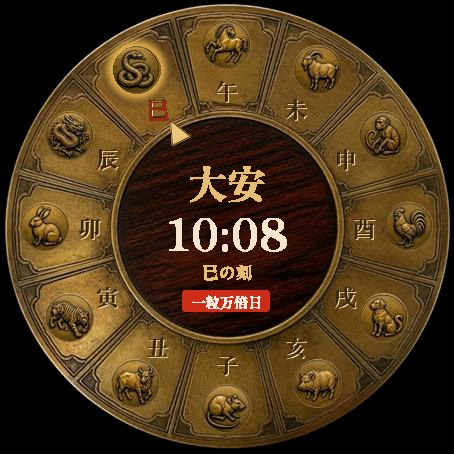
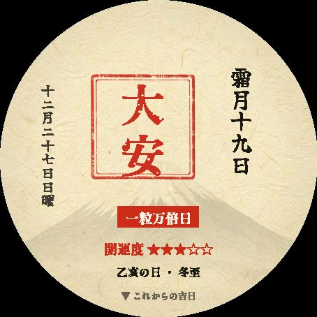
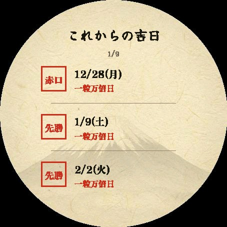

吉日表盘｜显示六曜・一粒万倍日・天赦日的Garmin日式表盘
吉日表盘(吉日ウォッチ)是一款Garmin日式表盘，只要看一眼手腕，就能知道今天是不是大安、是不是一粒万倍日、下一个天赦日是哪天。可在设置中切换3种设计：在和纸上盖朱印的「御朱印」、按农历盈亏的月亮照亮夜海的「月与夜海」、以及指示十二时辰的「江户和时计」。
结论：无需打开手机，表盘上随时可以确认六曜・一粒万倍日・天赦日等日本开运日。历法全部在手表内计算，没有信号的地方也能显示。

吉日表盘(吉日ウォッチ)
把六曜・一粒万倍日・天赦日・农历放在表盘上。1款收录3种日式设计，24小时免费试用后买断即可使用。
适合哪些人？
- 重视择日的人，例如换新钱包、开业、签约、登记结婚、购买彩票
- 每次都要上网查开运日、觉得麻烦的人
- 喜欢御朱印巡礼和日式设计，希望手表也有日式氛围的人
- 拥有对应的Garmin手表、想找独一无二表盘的人
3种设计
| 设计 | 特点 |
|---|---|
| 御朱印 | 和纸上的朱印。今天的六曜以「印章」形式盖上，农历月名(如霜月十九日)以毛笔竖写，并带有富士山水印。还会显示距下一个开运日的倒计时 |
| 月与夜海 | 按农历盈亏的月亮照亮夜海，海面上有一条月光之路，越接近满月海面越明亮。今天的六曜位于圆环上方，之后的六曜按顺时针排列 |
| 江户和时计 | 十二地支的时辰盘。当前时辰(子时・丑时…)会发光，黄铜指针24小时转一圈 |


可显示的历法
| 项目 | 内容 |
|---|---|
| 六曜 | 大安・友引・先胜・先负・赤口・佛灭 |
| 开运日 | 一粒万倍日・天赦日・寅日・己巳日・巳日・甲子日 |
| 最强开运日 | 天赦日与一粒万倍日重合的日子显示为「最强开运日」 |
| 倒计时 | 显示距下一个开运日的天数，如「距天赦日5天」(御朱印设计。可从天赦日／一粒万倍日／大安／寅日／最强开运日中选择) |
| 农历・干支・节气 | 农历日期、日干支、二十四节气 |
| 常亮显示 | 支持Always-On Display(AOD) |
免费应用「吉日日历」
除表盘外，还提供免费应用「吉日日历」(吉日カレンダー)，可在手表上一览今后180天的吉日(天赦日・一粒万倍日・寅日・大安的重合等)，并显示今天的六曜・农历・日干支・二十四节气和开运度(5级)。如果只想确认吉日而不更换表盘，可以先从这里试用。


支持机型
吉日表盘：支持38款AMOLED屏幕的Garmin手表：Forerunner 165・165 Music／265・265S／570(42・47mm)／965／970、Venu 2・2 Plus・2S／Venu 3・3S／Venu 4(41・45mm)、vívoactive 5・6、fēnix 8 AMOLED(43・47mm)／fēnix 8 Pro(47mm)／fēnix E、epix (Gen 2)／epix Pro (Gen 2)(42・47・51mm)、Instinct 3 AMOLED(45・50mm)、Instinct Crossover AMOLED、MARQ (Gen 2)・MARQ Aviator (Gen 2)、Approach S70(42・47mm)、Descent Mk3(43・51mm)、D2 Air X10／Mach 1／Mach 2／Mach 2 Pro(含同平台衍生型号)
吉日日历(应用)：在上述38款之外，还支持fēnix 6 Pro・6S Pro・6X Pro、fēnix 7・7S・7X(含Pro)、fēnix 8 Solar(47・51mm)、enduro 3、Forerunner 255・255S(含Music)／955、Venu(初代)、vívoactive 4，共59款。
价格与购买方法
吉日表盘安装后24小时内可免费试用全部功能。试用期结束后，只需一次解锁购买(US$3.99・买断)即可继续使用全部功能。3种设计全部包含在内，无额外收费或月费。吉日日历完全免费。
试用期结束后，表盘上会显示6位代码和「www.kzl.io/code」网址。用手机等打开该网址并输入代码完成购买，几分钟内即会自动解锁。付款由第三方服务「KiezelPay」处理，而非Garmin(支持信用卡／PayPal)。
常见问题
Q. 吉日表盘可以免费使用吗？
A. 安装后24小时内可免费试用全部功能。试用期结束后，以US$3.99买断即可使用全部功能，没有月费。如果只需要查看开运日一览，可使用免费应用「吉日日历」。
Q. 在哪里付款？
A. 付款由第三方服务「KiezelPay」处理，而非Garmin官方。试用期结束后，表盘会显示6位代码和网址，用手机打开网址并输入代码即可购买(支持信用卡・PayPal)。
Q. 3种设计需要分别购买吗？
A. 不需要。御朱印・月与夜海・江户和时计3种设计只需一次购买即可全部使用，并可随时在设置中切换。
Q. 需要网络或位置信息吗？
A. 历法计算不需要。六曜・农历・开运日全部在手表内计算，收录至2036年底的历法。
Q. 显示语言只有日语吗？
A. 是的。六曜和农历等历法显示为日语。